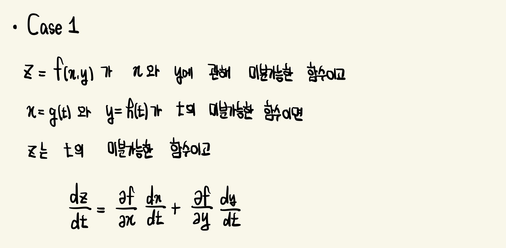
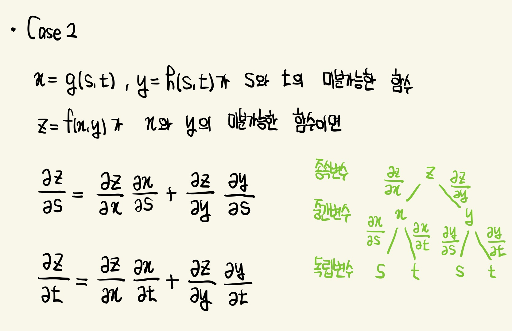
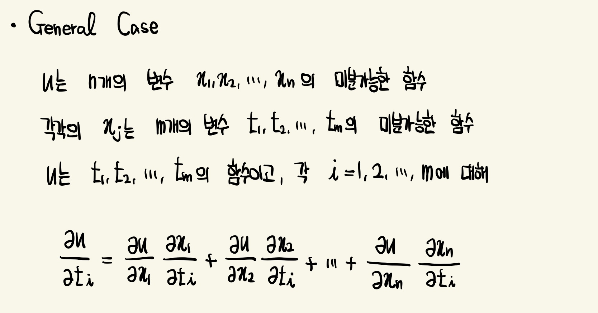
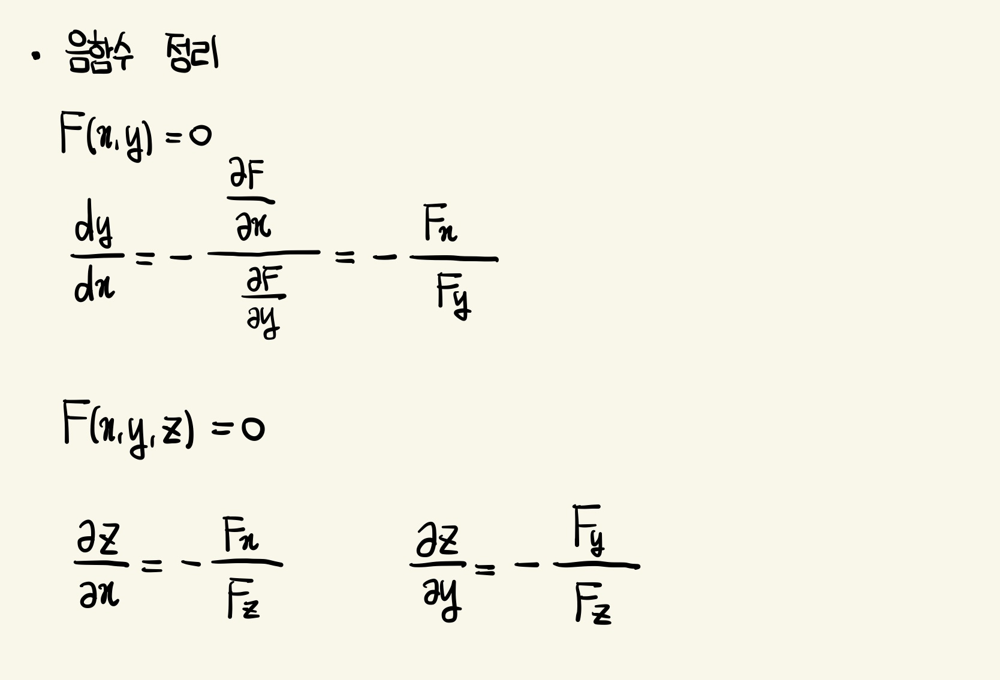

연쇄법칙 (Chain Rule)
z=f(x,y)이고, 변수 x,y가 변수 t의 함수인 경우 (x,y 일변수함수)

z=f(x,y)이고, x,y는 각각 s와 t의이변수함수인 경우 (x,y 이변수함수)

일반적인 경우

음함수 정리 (Implicit Function Theorem)
F가 (a,b)를 포함하는 원판상에서 정의되고 F(a,b)=0, F_y(a,b)≠0이며 F_x와 F_y가 원판상에서 연속이면, 점 (a,b) 근방에서 방정식 F(x,y)=0은 x의 함수로써 y를 정의함.
